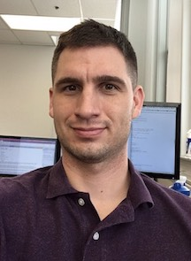

- Andrew M. Kent
- Software Researcher and Engineer
- Galois, Inc.
- Portland, Oregon
I'm a programming language and verification researcher/software engineer at Galois; I earned my Ph.D. at Indiana University under the advisement of Sam Tobin-Hochstadt.
My research interests revolve around programming languages and software engineering; in particular I frequently look for ways to leverage types, type theory, and formal verification techniques to build more robust systems.
Some work related to my dissertation has involved an extension to Typed Racket which adds support for basic dependent types. You can try it out by downloading Racket here (version >= 6.11).
Email | CV | Github | Twitter | Blog